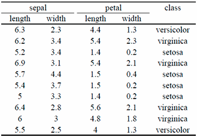

You might have already heard about the terms “Machine Learning” (or “Data Mining”, or “Big data”, or Data Analysis, or Data Science, or Cloud Computing) but you never actually knew what they meant. Maybe you know those are computer or mathematical stuffs and that is all. Maybe you have to use some softwares that relies on Machine Learning in your job, but for you, it is like magic.
Just to arouse your curiosity, Machine Learning is used on almost all subjects and all possible domains as soon as these is a record of observations. For example, Machine Learning is used by banks to detect frauds or predict risks, it is used by your email manager to detect spams, it is used by physicians to help diagnostics, it is used by bio scientists to analyse DNA, it is used by Google/Bing/Yahoo to answer your queries, etc.
My goal at the end of this series of posts is to make sure you understand a bit about Machine Learning and that you have an intuition of how these techniques work. Instead of writing a lot of theory, this post is mainly based on examples. To read this post, you don’t need to be a computer scientist, you don’t need to be scientist; in fact, you don’t even need to know anything related to computer or mathematics.
This subject is divided into three posts. This first post introduces one of the main tasks of Machine Learning: The Classification. The second post presents and illustrates two important techniques of Machine Learning for the classification task: One very simple but commonly used technique, and one state of the art technique. Finally, the last post will talk about how computer scientists can evaluate the quality of a Machine Learning techniques.
It is hard to give a practical definition of Machine Learning. In a few words, we would say that Machine Learning (or Data Mining, or any other synonyms) are the creation of programs that make predictions or that help users to understand complex phenomena.
Machine learning is a vast topic with a lot of sub-domains. Instead of trying to be too general, I will focus on only one topic: The “Classification”. The “Classification” is just one sub-domain of Machine Learning, but it is one of the most important one. When people talk about Machine Learning, they often talk about the Classification (if they don’t specify otherwise). In this post, I will only focus on the Classification.
The idea of the Classification is the following: We start with a list of “observations”. An “observation” is a general term. For Machine Learning, an observation is generally the description of an object or a situation. To help the understanding, let’s use a common example in Machine Learning: The Iris flowers. Suppose an observation be to be the description of a single flower: For each flower, we have four measurements: The width and length (in cm) of the sepal and petals. Irises are maybe not the most interesting example, but they are a simple and practical example to understand Machine Learning. Also, you should know that this iris example is actually called the “Iris dataset”, and it is wildly used by almost all Machine Learning scientists to test, debug and understand their classification algorithms.
The four measurements of each flower are called the “attributes”. In Machine Learning, an observation is just a list of attributes. When we compare observations, we actually compare the attributes: For example, this one flower has longer petal than this other flower. Attributes can represent very different things (For example, the length of an airplane, the duration of a storm, the temperature of a room, the color of a wall). Generally, attributes are considered of two types: numbers or categories. The difference between the two is not always strict, but informally when it makes sense to compare (< or >) different values of an attribute, we generally consider this attribute to be a number (like for the Iris petal length), otherwise we say it is a category (for example the color of the flower or the race of a dog).
In addition, for each observation (i.e. for each Iris flower), we have a “class”. A class is an extra bit of information about our observation. In our example, let’s suppose the class of an iris is the specie of this iris. In this example, we will only care about three Iris species: Setosa, Versicolour and Viginica.
To sum-up, we have a list of observations (Iris). And each observation has a list of attributes and a class. The table below shows an example of ten iris observations. This type of table is called a “dataset” in case you hear this word.

Now, let’s suppose that in total, we have 150 iris observations, however, for the last observation (the last Iris), we don’t know the class (i.e. the specie). We can ask ourselves the following question: It the specie of an Iris somehow related to the size of its petal and sepal? Maybe one of the specie has larger petal that the other? In other word, could we use the 149 Iris for which we know the class, compare them to the iris without class, and find the class of that last iris? This is exactly the problem of “Classification”. Phrased differently, the problem of classification can be described as follow:
Suppose a list of annotated observations (i.e. observations for which we know the class) and a non-annotated observation (i.e. we don’t know the class). How can we find the class of the last observation?
Off course, in practice, classification is not only used to classify flowers. Banks are using it to classify customers (For example, is this customer will reimburse his credit) . Hospitals are using it to classify patients (For example, is this patient will still be in good health tomorrow). Insurance are using it to classify clients (For example, what is the probability for this client to have a car accident). But classification can also be used at a much deeper level. For example, your camera uses classification to find faces in pictures. Postal services use classification to recognize addressee writing. Traders are using classification to predict market. Weather scientists use classification to predict the weather. Pharmaceutical scientists use classification to predict the effect of molecules, etc.
The main differences between these examples are the attributes. For example, for the bank customer, the attributes will be the monthly income, the credit score, the address or the number of use of a credit card in the last week. For the patients in the hospital, the attributes will be the sex, the hearth rate and the blood pressures. For the pictures or for the postal services, the attributes will be each pixel color values.
In the next post, I will explain you how we can solve classification! More precisely, I will present in details two widely used algorithms that any Machine Learning scientists know.
I hope you have enjoyed so far this introduction and I will see you in the next post.